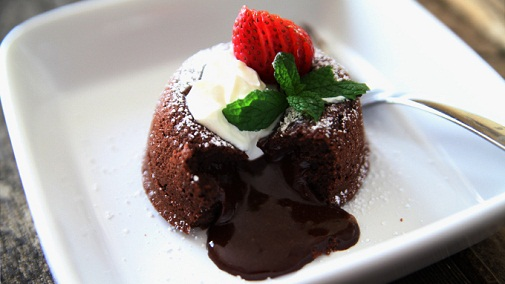

Rubrica „Squisito” vă propune săptămânal o rețetă simplă, pe care oricine o poate încerca acasă. Vă asigurăm că rețetele sunt bune, așa că nu dați vina pe noi dacă întâmpinați probleme. Spor la gătit și dacă ajungeți până acolo, poftă bună!
7 iunie 2017

Lava Cake
Ingrediente (8 porții)
3 ouă
3 linguri făină
3 linguri zahăr
200g unt
400g ciocolată (amară, albă, cu lapte etc.)
pentru ornat: fructe, înghețată, frișcă
Mod de preparare
Ouăle, făina și zahărul se bat bine, bine (contrar voinței lor), până când formează un amestec omogen. Nu trebuie să mai existe urmă de zahăr sau făină la suprafața compoziției.
Ciocolata și untul se topesc împreună la bain-marie (adică se pun împreună într-un laboș, deasupra altui laboș cu apă care fierbe).Ar fi recomandat să le lăsați să se topească fără să amestecați, pentru a obține o compoziție cât mai omogenă.
După ce ați luat ciocolata și untul de pe foc, le amestecați până când nu se mai observă urme de unt.
Din această compoziție, puneți, pe rând, câte o lingură în amestecul de ouă, zahăr și făină și amestecați încet (pentru simplul motiv de a nu stropi bucătăria) cu un tel.
Ungeți 8 forme pentru prăjituri cu unt și presărați puțin (dar puțiiiin) zahăr în (nu pe lângă) ele.
Împărțiți cu ajutorul unei lingurițe crema în cele 8 forme.
Dați la cuptorul încins pentru aproximativ 10 minute. Dacă depășiți acest timp, vă puteți lua gândul de la Lava Cake.
Se servesc calde, alături de o cupă de înghețată sau ornate cu frișcă și fructe, după preferințe. Poftă bună!